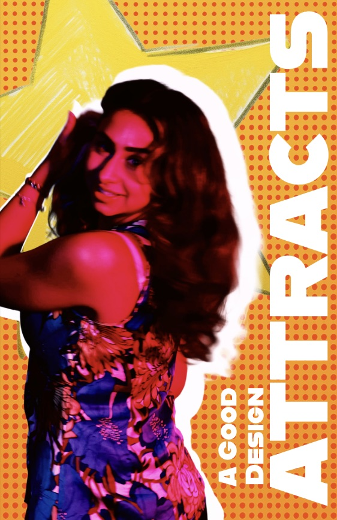
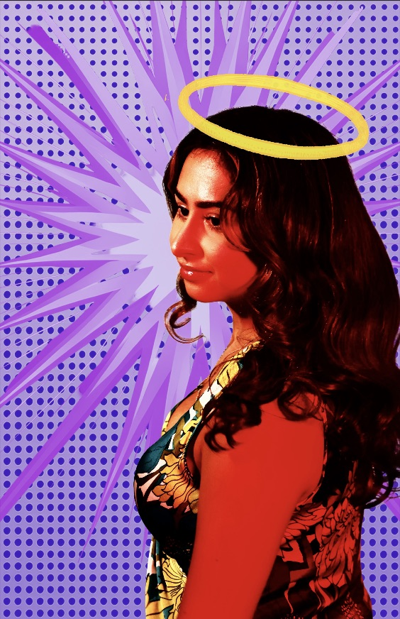
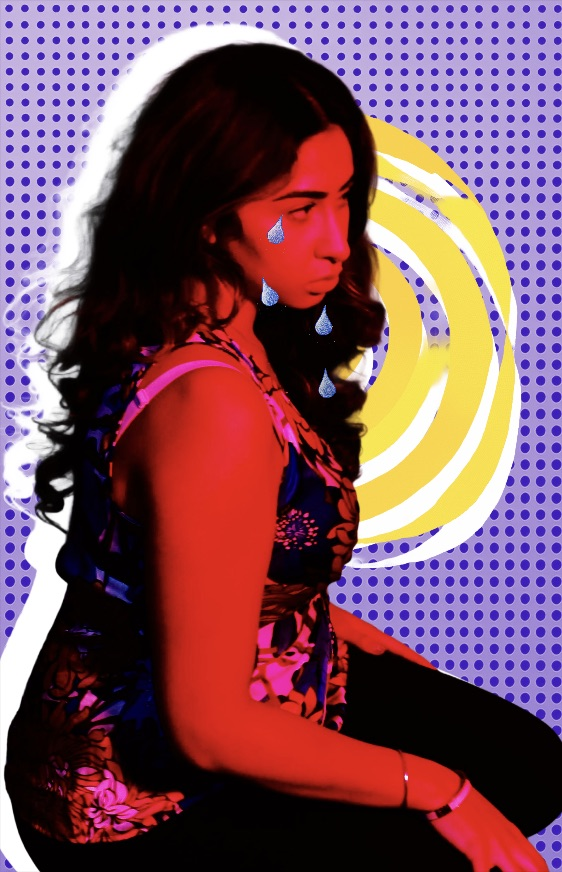

Graphic Design / Poster Design
A poster project built around my personal design philosophy, using bold visuals and expressive typography to communicate what good design means to me.



This project explores my personal design philosophy through a series of posters that use typography, composition, and image treatment to communicate what strong visual design feels like to me.
I developed the concept, created the poster compositions, and made decisions around typography, image placement, and visual balance. My role was to turn an abstract idea about good design into something clear, expressive, and visually engaging.
I explored multiple poster variations to test different ways of communicating the same message. This included adjusting scale, angle, contrast, and emphasis so each version could express the idea in a slightly different way while still feeling connected as one system.
I approached this project by thinking about what makes a design immediately noticeable and memorable. Rather than only focusing on decoration, I used type, composition, and contrast to guide the viewer’s eye and strengthen the message.
Creating several variations helped me test what felt most effective and what design choices made the message stronger or weaker.
A major focus of this work was hierarchy. I wanted the key message to stand out clearly, with supporting visual elements reinforcing it rather than competing with it. I also paid attention to spacing, balance, and readability so the posters felt bold but still intentional and easy to understand.
This project helped me strengthen my understanding of how composition and typography shape meaning. I learned that even small changes in hierarchy, placement, and contrast can completely change how a design is read.
More importantly, it showed how design decisions need reasoning behind them. The final series reflects not just what I made, but how I tested ideas and refined them to better communicate my point of view.